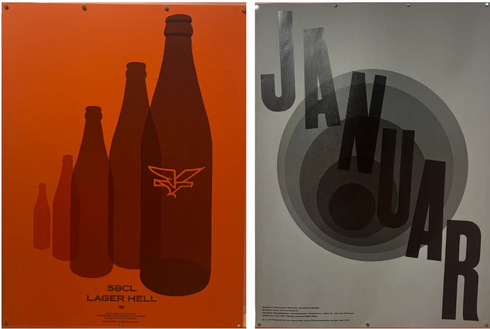

イメージ元のビジュアル

- ・同じ図形を繰り返すことでインパクトある作品になっている
- ・色数は少なくてシンプルなことで、形に注目がいく
- ・手前と奥がはっきりしていて、立体感がある
- ・図形の重なったところが暗くなることで透明感がある→奥行き
再解釈して作成したオリジナル作品

考察と結論
１つ１つのポスターの構成をじっくり分析することでそのポスターが印象に残る理由や、美しく見える理由が具体的にわかり、色彩や構図が与える影響の大きさをより感じた。
またその構成や表現方法を活かして自分なりのポスターを作ることで、今までの知識では考え付かなかったような構成で作品が作れるようになったため、既存の作品を観察することは重要なことだと思った。また、似た構成でも色彩が違えば印象はとても変わると感じたことから、与えたい印象によって作品を構成している要素ごとのバランスや、何を一番強調するべきかなど、作品を作る前に慎重に設計をすることが大切だと改めて感じた。
→既存作品の分析は、デザインの表現方法を学ぶだけでなく、新たな発想を生み出すための有効な手段である